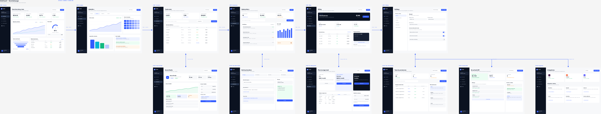

One workflow.
Any design tool.
Swap the provider, keep the craft.
Design Runner separates what you make from where you make it. A workflow asks for abstract capabilities — document inspection, canvas execution, render capture. A runner maps those capabilities onto Figma, Tencent Design Ardot, self-hosted Penpot, or plain local files — then applies a fail-closed policy before any cloud, desktop, or write operation fires.
5×runners · local → cloud
15+workflows & aliases
0 silent provider swaps
denied default posture, always
01
The Runner Catalog
verified against live MCP builds| Runner | Transport | Posture | Notes |
|---|---|---|---|
| local-files | kind: local | cloud offdesktop offsafe default | HTML, SVG, source trees, and local browser QA. Needs no configuration. |
| penpot-local | kind: mcp | cloud offdesktop off | Self-hosted Penpot adapter. Motion is emulated through canvas primitives. |
| ardot-remote | kind: mcp | cloud ondesktop off | GUI-free after browser OAuth. Verified against Ardot MCP 1.0.11. OAuth state stays outside the repository. |
| ardot-desktop | kind: mcp · :50501 | desktop req. | Requires explicit desktop permission. File creation unsupported in the verified server version. |
| figma-remote | kind: mcp | cloud ondesktop off | Full native capability coverage including motion read/write. |
Capabilities resolve through names like $DESIGN_RUNNER_DOCUMENT_INSPECT — abstract requests, never literal tool names. A runner cannot quietly substitute another provider when one is missing.
02
Fail Closed, Not Polite
checked by 8 resolver testsWhen in doubt,
deny everything.
RULE R-01
No silent fallback
A missing capability stops the workflow. The runner never substitutes another provider mid-task to keep moving.
RULE R-02
Writes are explicit
Every operation that mutates a design file is flagged. Cloud, desktop apps, and design writes are denied unless your policy allows each one.
RULE R-03
Unknown means write-capable
An unrecognized tool is assumed to write designs until proven otherwise. Trust is earned by inspection, never granted by default.
Enforced before every call → scripts/runner.py check exits non-zero on any policy violation. Credentials stay out of Git: no OAuth JSON, no tokens, no exceptions.
03
Unified Product Flow
workflow № 02 in the catalogScattered mocks become one reviewable canvas. Twelve screens move without resizing, navigation gets labeled arrows instead of abstract interaction-map pages, and the empty pages behind them disappear.
- 1
Inventory roots
Find every real screen root across the file. Nothing invented, nothing skipped.
- 2
Reuse one page
Claim an existing design page as the single canvas rather than spawning another.
- 3
Tile in place
Move screens side by side. Sizes stay untouched so reviews compare like with like.
- 4
Connect routes
Labeled arrows carry navigation, detail, branch, and return jumps between screens.
- 5
Replace abstractions
Old interaction-map pages get deleted once their routes exist as real connectors.
- 6
Verify first
Confirm every root landed on the unified page before anything destructive runs.
- 7
Collapse pages
Delete emptied source pages until exactly one page remains. One canvas, whole product.
- 8
Export proof
Pull a full-page overview and inspect every connector before calling the flow done.
04
Orbit SaaS Proof
real run · ardot cloud13→1pages collapsed
12screens tiled, unresized
11route connectors drawn
36swalkthrough recorded

05
Install & First Run
python3 · zero config for safe modegit clone https://github.com/liush2yuxjtu/design-runner-skill.git \ ~/.agents/skills/design-runner # safe local mode needs no configuration: # cloud ✕ desktop ✕ design-writes ✕
python3 ~/.agents/skills/design-runner/scripts/runner.py check python3 ~/.agents/skills/design-runner/scripts/runner.py \ resolve design-to-code # swap provider without rewriting the task: # resolve ardot-remote · penpot-local · figma-remote
Going headless with Pi? The bundled extension (extensions/pi-design-mcp) loads provider tools dynamically and keeps OAuth state under Pi's private directory — never inside the repository.